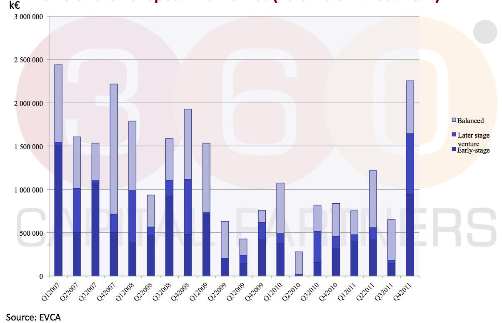
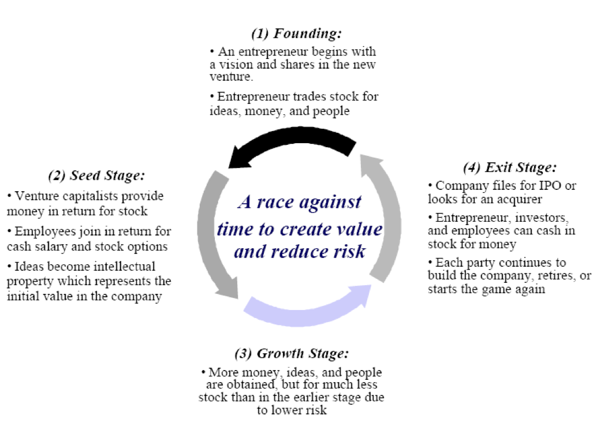

Venture Capital: Istruzioni per l’uso (Come funziona e in che modo può aiutare una stratup)
Introduction to venture capital
Venture Capital is a small part of Private Equity
Venture Capital (€4.9bn, 2011)
- Cashin to finance growth
- Minority shareholders next to the entrepreneur
- Highly innovative industries
- Young companies, losing money with ambitious plans
- Pure equity risk
- Expected return above 10x over 5-7 years time horizon
Private Equity (LBO,capdev) (€34.9bn, 2011)
- Cashout to buy shares from existing shareholders
- Majority shareholder with usually new management team
- Traditional industries
- Consolidated and profitable companies
- Structured finance = lever is one of the key
- Expected return 2‐3x over 3-5 years time horizon
Size of the European VC market (volume of investment)

Impact on the real economy of VC investing
A recent survey on a selected number of VC-‐backed french companies in the digital industry has proved that:
- VC investing generates employment growth (not true for the rest of the economy!!) and better quality (full time vs temporary contracts) than SMEs on average
- VC backed companies hire younger people on average (31 years) and almost 13% of hirings are straight out of college
- VC backed companies invest more in R&D (2 Emes average SME) and are more internationally oriented (40% of turnover)
Venture Capital champions
Europe
USA
How does VC investing work?
Venture Capitalist investment game

Our golden rules (investment criteria)
- The entrepreneur has to prove strong leadership, vision and passion
- The market you are adressing has to be huge
- Look at profitability!
- The right team on board (need people to push, hire slow and fire fast)
How does a Venture Capital protects its minority position ?
VCs typically take a minority stake in the company. Standard protection tools in the industry are:
- Preferred versus ordinary shares
- Liquidation preference: participating and non-participating
- Anti-dilution clauses: full ratchet or weighted average
- Corporate governance rules
How does a VC make sure that its targets are reached?
VC exit target is to be negotiated when the deal is closed
-
Exit Emeframe
-
Tag along
-
Drag along
Other standard characteristics of a VC deal:
-
Internal investors partecipation
-
Preferred dividends
-
Rights in future rounds
-
Rights of first refusal
-
Information rights
-
Management salary and commitment
How an early stage fund makes money
-
20 deals:
-
1 Blockbuster, 20x=80 M
-
1 star, 10x =40 M
-
2 successes, 5x=2x20M=40 M
-
4 average, 2‐3X =4x10M=40 M
-
6 bad investments:0,5-2x= 20 M
-
6 write offs
-
Total : 220 M, net IRR to investors 12%, carried interest 20‐25 M (for 12 years’ worth of work)
-
On any given investment, 10x must be possible
-
In a successful fund, fund managers make less money than successful entrepreneurs, which is normal, similar to average entrepreneur
-
NB: FCPI/ISF funds are different
What is the real average holding time in Europe (1)? venture5.png
How to raise VC money
How to approach a Venture capital fund
- Tell us who you are (management team CV and track record)
- Tell us what you want to do (value proposition to customer) and how (we can be your beta testers!)
- Sizing of the market
- Is there any IP protection envisageable
- Ambitious but credible financials with validated hypothesis
- Financial need and existig cap table
Few tips prior to your meeting
- Short &clear (make your investor deck short & clear)
- Get challenged (train yourself)
- Qualified endorsement (get opinion leaders on board since the beginning)
- Standard venture capital terms (be familiar with the VC legal jargon)
- Pick the right VC firm and the right person to talk to
- Feedback & next steps (ask for feedback and next steps at the end of your meeting)
Common myths
-
NDAs
-
Avoid DCF & IRR estimates